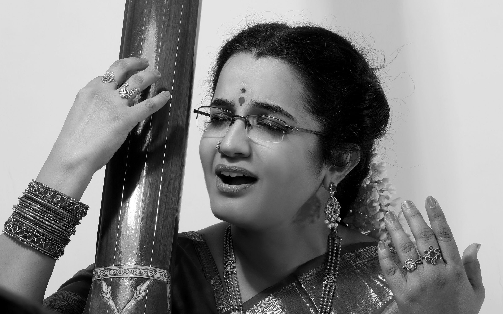
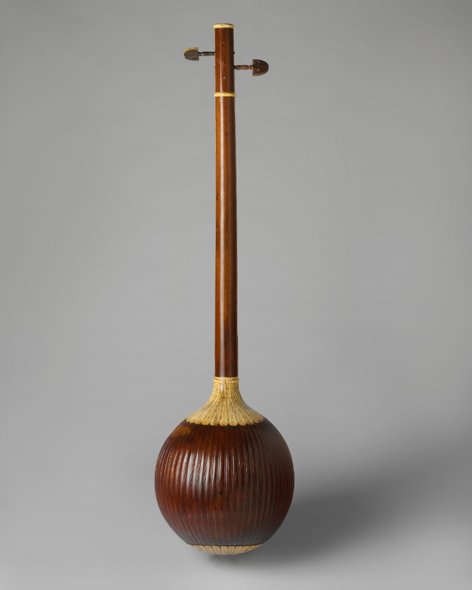
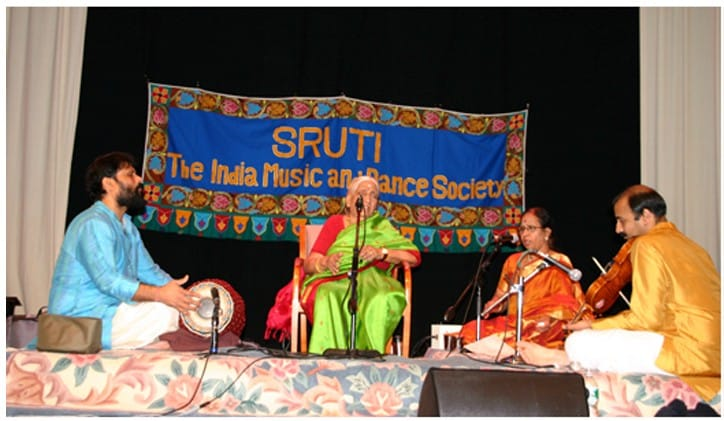
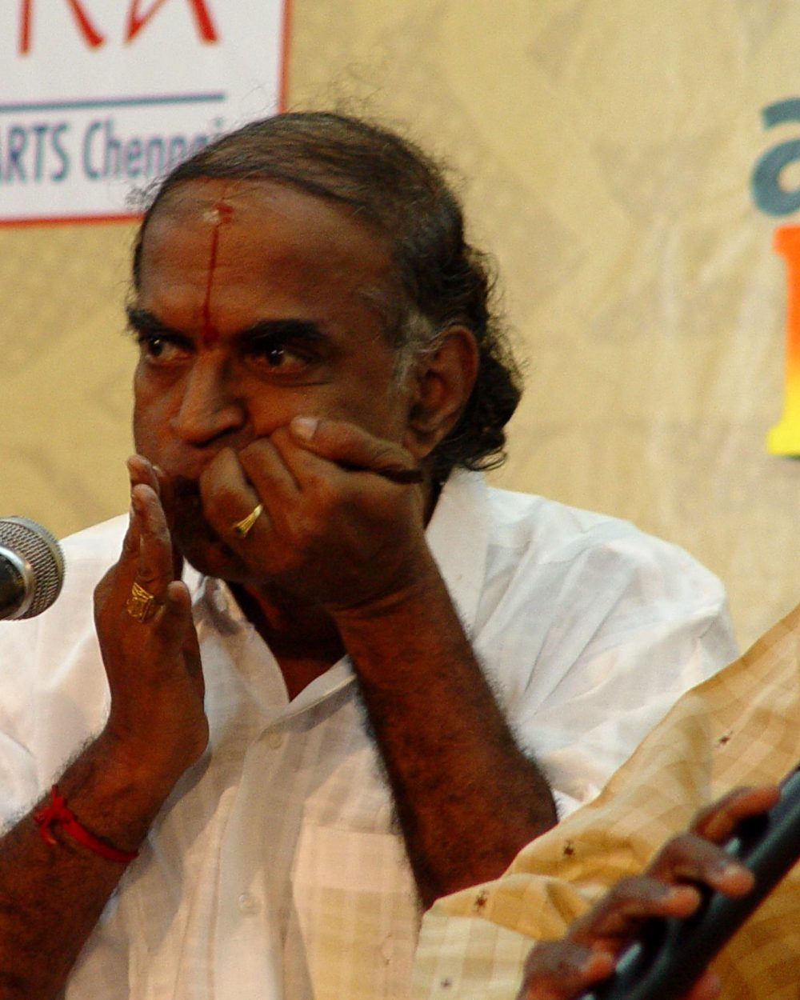
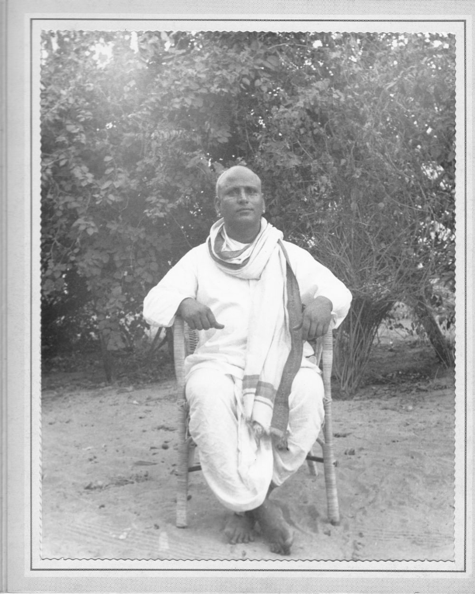
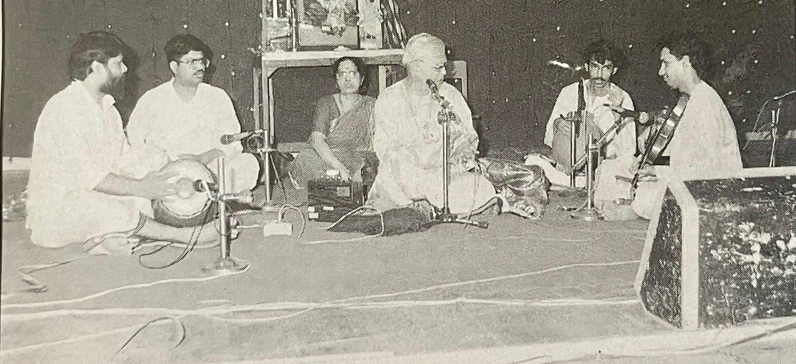
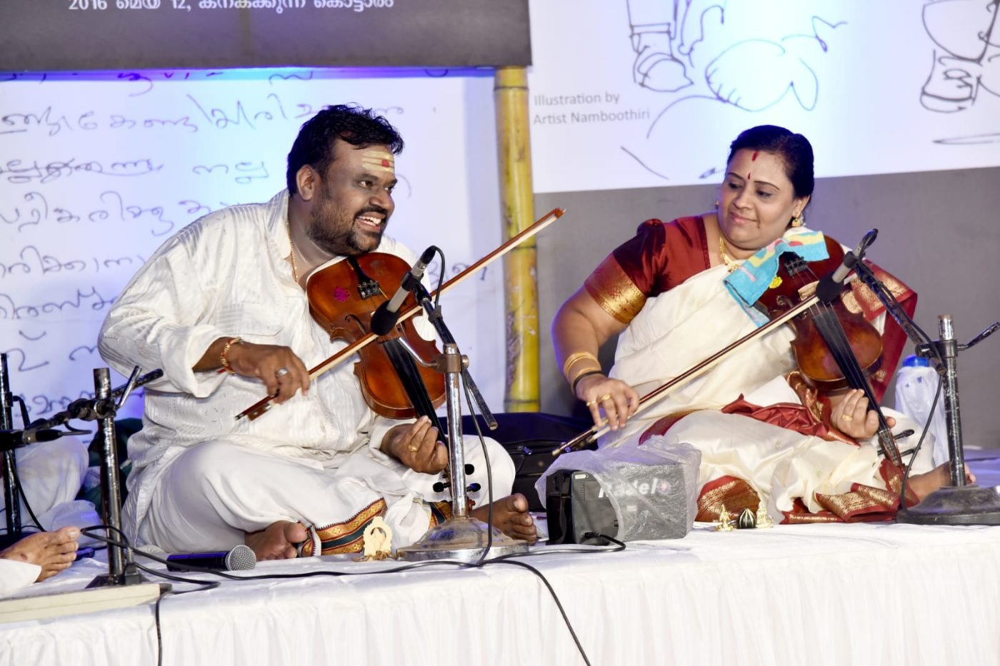
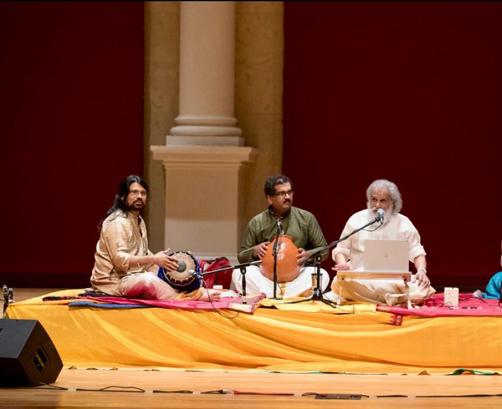

Every raga begins with listening.
Vocal and veena classes with practising artists, from first lessons to the concert stage.
We teach the ear before the hand.
A guru–shishya spirit with a modern, structured path: listen first, play with intent, carry the tradition forward.
- Shruti
- Pitch and the trained ear.
- Laya
- Rhythm and patience.
- Bhava
- Feeling and expression.

Choose how you want to make music
Graded levels for every age, from first lessons to arangetram.

Carnatic Vocal
Build a steady voice, then the songs and raga sense to use it.
- Voice culture and shruti
- Sarali varisai and varnams
- Kritis of the Trinity
- Raga alapana and kalpanaswara
Veena
Learn the instrument of Saraswati, with its singing gamakas.
- Posture, fingering and plucking
- Gamakas that make a raga sing
- Varnams, kritis and tillanas
- Playing with a vocalist

Five stages, one steady path
Small batches, personal correction, and practice plans you can follow at home.
- Stage 1
Foundations
Shruti, sarali varisai and basic technique.
- Stage 2
Varnams
Speed, accuracy and tala, phrase by phrase.
- Stage 3
Kritis
Songs with gamakas and expression.
- Stage 4
Manodharma
Raga alapana and kalpanaswara: making music of your own.
- Stage 5
The stage
Recitals and, when ready, the arangetram.
Meet the teachers
Concert musicians who also love to teach.
What the practice gives you
Skills that last well beyond the lesson.
A trained ear
You learn to hear pitch and rhythm precisely.
Calm focus
Daily riyaz builds patience and attention.
Cultural roots
Songs and ragas carried through generations.
Stage confidence
Regular recitals make performing familiar.


Students perform, not just practise
- Riyaz
- Daily practice with weekly goals.
- Recitals
- A monthly student kutcheri.
- Festivals
- An annual celebration of music.

Student voices
“Each week I leave knowing exactly what to practise.”
Vocal student, Level 1
“The veena felt impossible. Now I play a full varnam.”
Veena student, Level 3
“My son looks forward to class. He hums his lessons all week.”
Parent of a young learner
Illustrative student voices written for this preview, not verified reviews.
Your first class is a conversation, not a test.
Book a free trial and meet the teacher who suits you, or explore the courses first.
